Entangled: A Multi-Modal, Multi-User Interactive Instrument in Virtual 3D Space Using the Smartphone for Gesture Control
Abstract
In this paper, Entangled, a multi-modal instrument in virtual 3D space with sound, graphics, and the smartphone-based gestural interface for multi-user is introduced. Within the same network, the players can use their smartphone as the controller by entering a specific URL into their smartphone’s browser. After joining the network, by actuating the smartphone's accelerometer, the players apply gravitational force to a swarm of particles in the virtual space. Machine learning-based gesture pattern recognition is parallelly used to increase the functionality of the gestural command. Through this interface, the player can achieve intuitive control of gravitation in virtual reality (VR) space. The gravitation becomes the medium of the system involving physics, graphics, and sonification which composes a multimodal compositional language with cross-modal correspondence. Entangled is built on AlloLib, which is a cross-platform suite of C++ components for building interactive multimedia tools and applications. Throughout the script, the reason for each decision is elaborated arguing the importance of crossmodal correspondence in the design procedure.
Author Keywords
Multi-modal Instrument Design, HCI, Machine Learning, Social Interaction
CCS Concepts
•Applied computing → Media arts;
•Human centered computing → Interactive systems and tools;
Introduction
The rapid development of computational hardware and the current availability of advanced processing power has opened up new opportunities for multimodal instruments. While conventional acoustic instruments have physical characteristics that determine the sound, with the computational platform it became possible to separate the production of sound from the instrumental device. This circumstance gives great freedom to the design of new interfaces for musical expression, but at the same time, it is a challenge to design the interface for the player to interact with the sound material that is now separated from the controller. This aspect of digital instrument design has provoked active studies and discussions about how it affects its potential creation, its players, and its audience [1][2][3]. Likewise, while multimedia implies using visual and audio information, study on media is recently expanded from Multimedia to Mulsemedia (MULtiple SEnsorial MEDIA) [4][5] and opening new opportunities for involving additional sensory modalities into human-computer interaction.
Motivated by this expansive era, this study introduces a multi-user interactive instrument, Entangled, for multimodal composition in VR environments. For the last decade, each component of this instrument including VR, gestural interface, smartphone control, and multi-user participation has been widely studied and used in NIME [6][7][8][9][10][11][12][13][14]. Especially, Atherton’s [6] study discusses and suggests new design principles to consider the audience and performers’ relationships to the VR instrument. Entangled utilizes smartphones to connect our gestures to the virtual world with a virtual embodiment. Accordingly, the performers and the audience can observe the VR projection and performers' intention simultaneously instead of staring at their smartphone screen. To utilize the expressiveness of gestures and reduce their artifact, the gesture is not directly mapped to certain sounds or graphics. This aspect is explained in the Interface section.
Likewise, rather than simply merging different components, Entangled is designed to achieve a novel experience that can be only obtained when different modalities are naturally entangled. This entanglement between modalities is the crossmodal correspondence. Maintaining crossmodal correspondences in digital creation provides the most veridical estimate of environmental properties or stimuli by combining the different unisensory perceptual estimates that refer to the same object while keeping those estimates separately [15]. For example, Tsiros's study [3] shows an adequate design of cross-sensory mappings with prior perceptual knowledge can improve not only human-computer dialogue but also the creative, analytical, and pedagogical value of user interfaces. From this perspective, the principles of music composition, interface, physics, graphics, and sonification are elaborated throughout the paper explaining how and why each methodology is adopted and establishes causality to other modalities.
Design Criteria
Entangled is a multimodal instrument and its aesthetic foundation is based on the field of music. Music is an interactive activity coordinated with structured acoustic stimulation to capture the subtleties injected by musicians [16]. The structured acoustic stimulation formalizes sonic narrative by a succession of events in time and also by the interaction between simultaneous sounds [17]. Entangled intends to expand the above concept to the audiovisual domain by constructing correspondence between modalities.
Crossmodal Correspondence
Let's suppose that gesture is directly mapped to a sonification equation. There would be countless good or less-good ways to implement the mapping function. However, considering the physical constraints of gesture and the compositional goal, it would be hard to find a satisfying mapping.
If we add another dimension of data to help connect gesture with sonification, there will be more opportunities to make a natural chain of causality. This concept refers to crossmodal correspondence which is the natural mapping of features, or dimensions, of experience across sensory modalities. This can be graphics, physics, language, or any modality that humans can perceive naturally. By designing proper graphic feedback that follows a certain law of physics, or by establishing a certain language, data from different modalities can maintain causality. Certain causality is ideal for a multimodal instrument for composition since it can be an efficient way to inspire a piece.
Crossmodal correspondences can be established by building proper articulation between modalities. Signal processing, machine learning-based gesture recognition, visualized data, and algorithmic generation can be the articulation. For example, in The reactable [18], while the users simply place and spin physical materials on the surface, the visualized algorithmic system interacts with the materials showing the interface. The interface generates sound correspondingly using various synthesis methods including an oscillator, sample player, and resonant filters. Likewise, visualized algorithmic data is another modality that connects the trigger of the device and sound material using the visualized algorithmic system and this opens large potentials to multimodal composition. Also, multimodal approaches to creating the mapping between gesture and sound in interactive music systems have been devised [19][20][21]. For instance, Françoise’s method [19] utilizes both direct mapping and temporal mapping based on Hidden Markov Models (HMM). In that method, the classification model of temporal control is obtained by observing the previous stream of gestural data. These approaches show that temporal interaction can be used to trigger particular temporal markers at specific times. As a result, the multimodal interface allows controlling the combination of continuous-time parameters and discrete-time events, synchronized to the input gesture data. Likewise, players can correlate and utilize another modality with crossmodal correspondence when a proper interface is established.
While the following sections elaborate the instrument’s concept and methodology, every module including interface, physics, graphics, and sonification is highly correlated with one another from the idea to its implementation. Figure 1 shows the overall structure of the system.

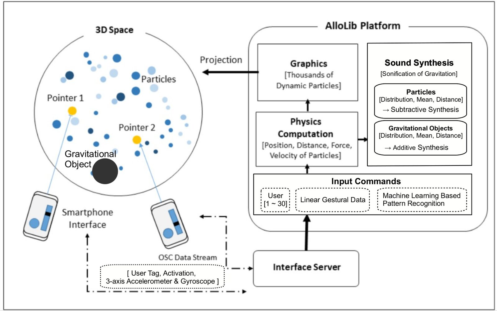
Figure 1. Overall structure of the instrument ‘Entangled’
Physics and Graphics
While everything can happen in the virtual domain, establishing the causality based on real physics helps build intuition for the users. In this instrument, gravitation is the medium that combines every modality. The gravitation explains the force that binds all the objects in the generated virtual space and grants acceleration and velocity to them. When the linear control is activated and the player accelerates the smartphone, gravity occurs at the virtual point where the smartphone points toward. The magnitude of gravity changes according to the magnitude of the acceleration. The gravitation simultaneously affects thousands of particles in the virtual space and particles change their acceleration, velocity, and color correspondingly.
The players can also generate gravitation using specific gestural patterns. By drawing an inward spiral using their smartphone, a gravitational point is generated at the directed point pulling particles into that point. The gravitational point is visualized as a dark blinking sphere. Contrariwise, an anti-gravitational point occurs when an outward spiral is drawn pushing particles away from the point. This object is visualized as a bright blinking sphere. These special objects blink and vibrate faster when it is close to lapse. Detailed descriptions of the interface will be made in the Interface Section.

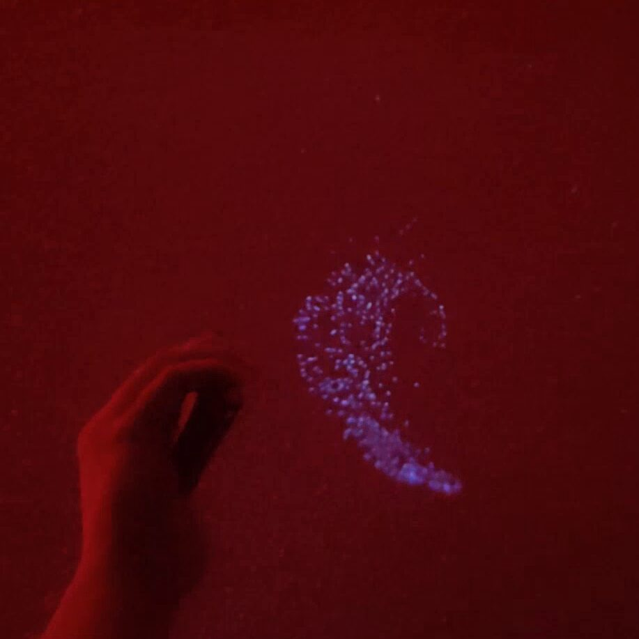
Figure 2-1.

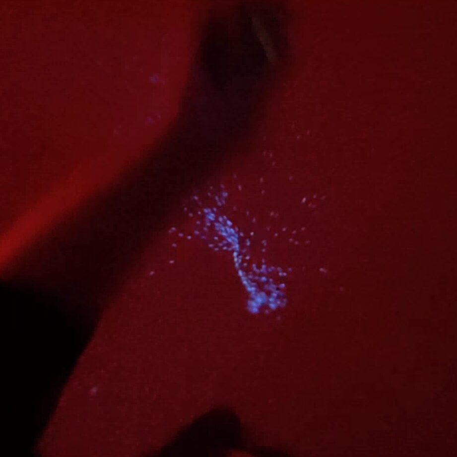
Figure 2-2.

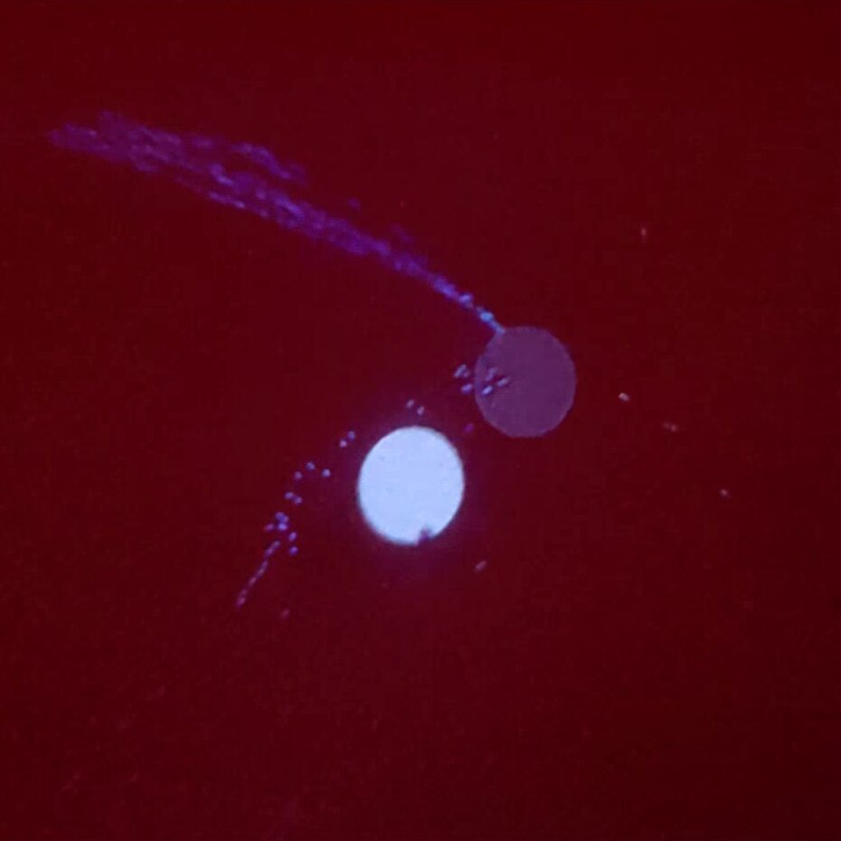
Figure 2-3.

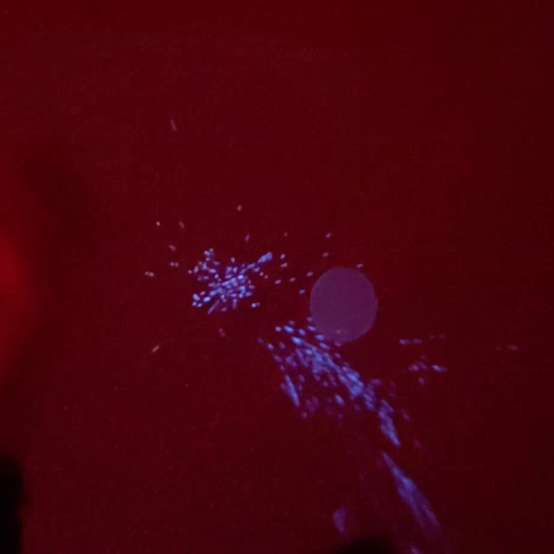
Figure 2-4
Interface
Interface is the membrane of interaction between humans and technology. Our bodies and movements are the most expressive tools that humans can have [22]. Whether they use smartphones or not, gesturally controlled sonification methods have been actively proposed [12][13][14]. While the electronic medium allows the interface to be coupled or decoupled from the function of sound, it is crucial how and why the interface uses the gestures. Mutualizing the gesture and interface identifies the characteristic of the instrument into its input, mapping, and output which are related. However, while the human gesture is characterized by a smooth, continuously changing relationship of the limb to the body, the disconnection of the computer from the interface makes it impossible to perform the computer the same way that a human can play an acoustic instrument. Therefore, the direct connection of the gesture to the interface may constrain the compositional process. For example, relying on only a direct mapping of angular location using gyroscope data may limit the profound utility of human gesture.
In Entangled, as described in the physics and graphics section, the interface requires two different types of commands: 1) gravitation using continuous gestures, and 2) generation of gravitational objects. These commands can be triggered via corresponding buttons. By separating linear and non-linear event buttons, the interface takes advantage of both the profound utility of human gesture and discrete control at the same time.
Figure 3 shows the javascript-based interface [23] transmitting the gestural data and simple button commands through OSC to the AlloLib1. When these buttons are off, the player's gesture does not affect the world. Gravitation using continuous gestures starts to occur when the player presses an activation button on the smartphone screen and, at the same time, the smartphone's acceleration is higher than a threshold.

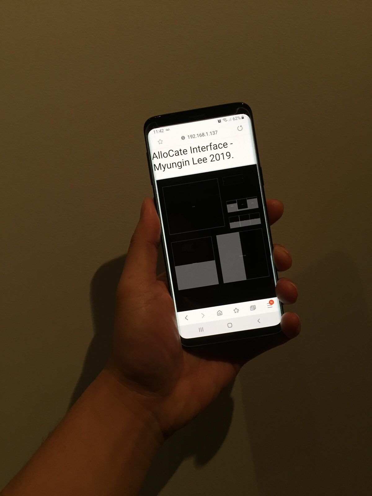
Figure 3-1.

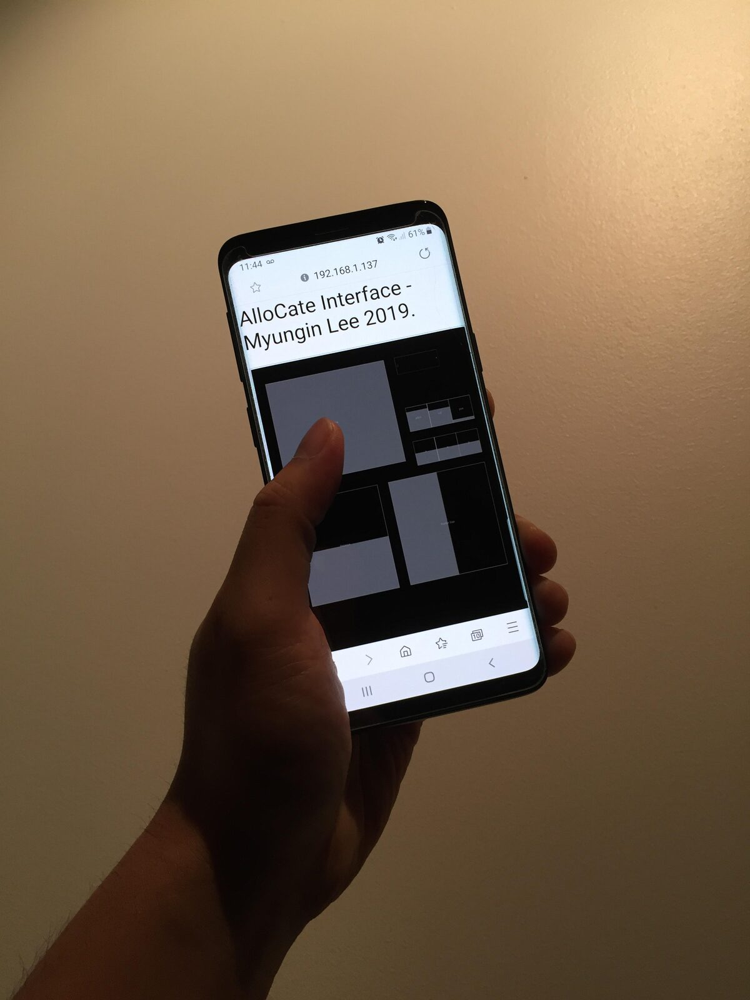
Figure 3-2.
On the other hand, the generation of gravitational objects, including gravity and anti-gravity points, requires machine learning-based gestural pattern recognition since it is activated by corresponding gestural patterns such as an inward spiral and an outward spiral. When the pattern recognition button on the screen is triggered, the gestural data are observed as a 6-dimensional stream of data (3-axis accelerometer and 3-axis gyroscope) to classify.
To achieve this goal, I adopt a VGG-Style convolutional neural network for multichannel spectrogram [24]. This model is known as a state-of-the-art image classification method and is widely used for various single or multi-channel data recognition [25][26][27][28]. While conventional study with Support Vector Machine (SVM) for 2D gesture exists [29], I adopt the CNN-based method to allow future expansion to more complicated patterns in 3D while maintaining real-time executable complexity. Also, our classification task differs from 2D character recognition since an inward spiral and an outward spiral can have the same 2D footage if the time sequence is neglected.
In this algorithm, 256 samples of gesture data for every 6-channel data are observed as six different spectrograms and adopted as the input of the network. The number of samples, 256, corresponds to about 5 seconds in time scale considering the adopted sample rate of the gestural sensors. Certain spectrograms can be obtained using a window size of 32 and a 50% overlap. Figure 4 shows the adopted neural network model. Meanwhile, the optimal selection of the machine learning model and its configuration requires further studies considering its complexity, accuracy, and depth of data to classify.

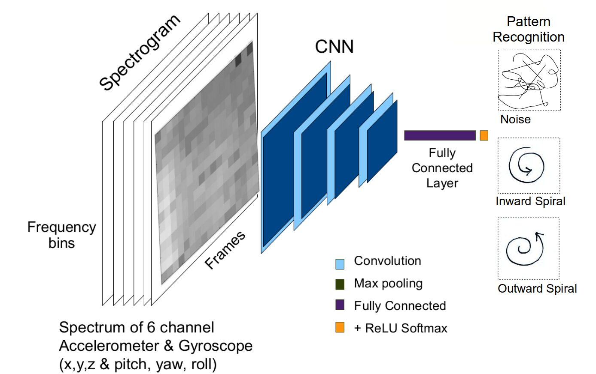
Figure 4. The structure of the adopted machine learning model
To train three different gesture patterns (noise/ inward spiral/ outward spiral), for each pattern I produce 250 incidences with various orientations, speed, and size. Two hundred incidences are used as the training set and the remaining 50 incidences are used as the unseen test set. Table 1 shows the results of the test. Even though the size of the dataset is relatively small, the test results show that the system filters noise data well and classifies the commands at a sensible level. However, this requires further study for the advanced usage of further commands. Pytorch C++ API is used for training, testing, and implementation.
Table 1. | Input | |||
|---|---|---|---|---|
Noise | Inward Spiral | Outward Spiral | ||
Result | Noise | 96 | 0 | 8 |
Inward Spiral | 0 | 82 | 0 | |
Outward Spiral | 4 | 18 | 92 | |
As a result, machine learning-based gestural pattern recognition is used to increase the functionality of gestural commands to intervene non-linear events in the linear timeline. Still, the specification of this experiment can be modified or optimized for different goals or different resolutions. In this investigation, rather than stating a specific performance of a certain model and dataset, I argue for the importance of experiment design considering the goal of the overall system.
Sonification
Audio plays a role to sonify the gravity of thousands of particles and their shape from the position of the gravitational source. This concept stems from Newton's third law which states every force in nature has an equal and opposite reaction. By sonifying the gravity, the player can listen to the characteristics of the elements in the system and coordinate with the player's gestures and graphics.
Instead of sonifying the gravity of every single particle, the system models the shape of gravitation using a stochastic model and sculpts the sound using subtractive synthesis and additive synthesis.
The average gravitation value determines the cutoff frequency and the distribution value determines the bandwidth frequency of the subtractive synthesizer. When the acceleration of the gesture is fast enough, the gesture triggers the synthesizer stochastically, which is similar to the ringing bell.
Gravitational point and anti-gravitational point generate a harmony of low frequency using additive synthesis based on the power of gravity affecting the particles.

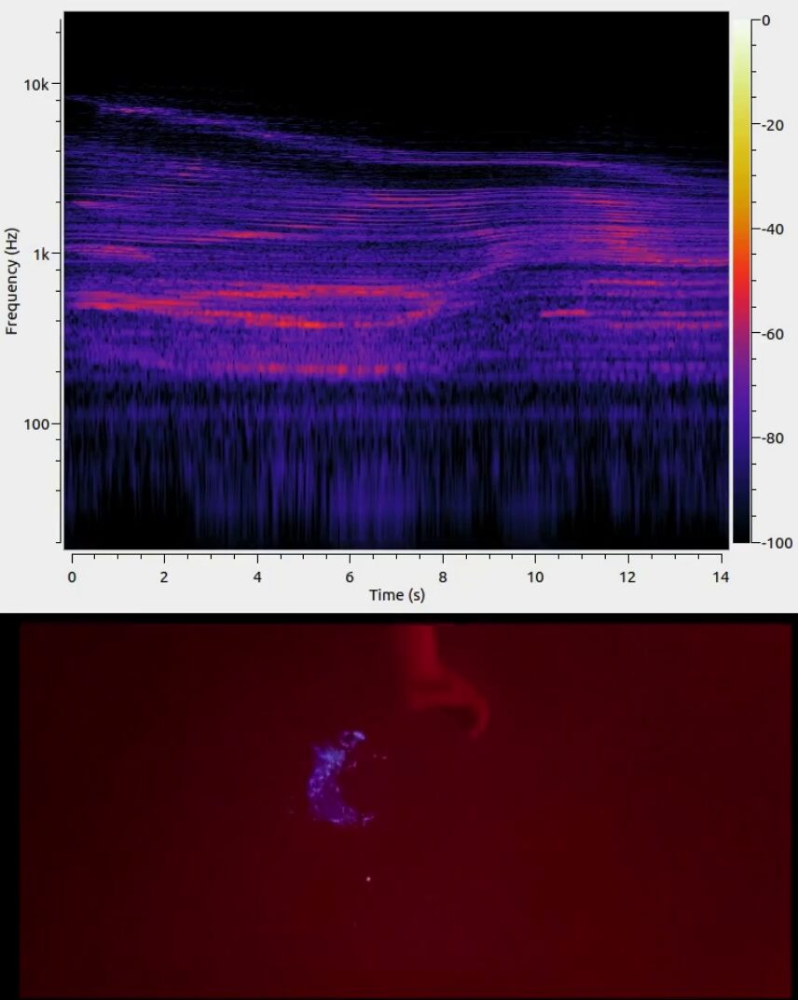
Figure 5-1.

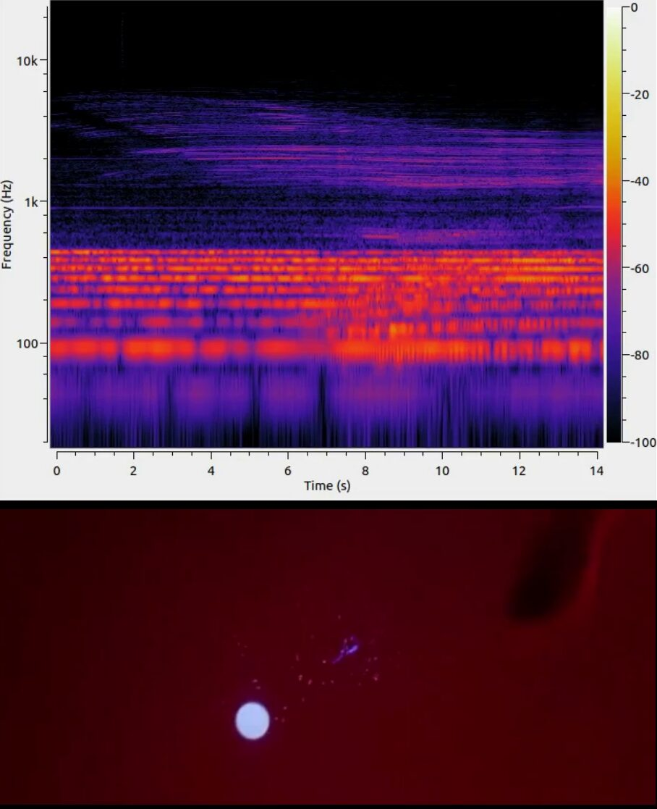
Figure 5-2.
Figure 5 visualizes the frequency spectrum of audio over time and the corresponding play at the moment. Comparing Figure 5-1 and Figure 5-2, the stream of the spectrum is spread wider over frequency when the particles are spread wider over the range. Figure 5-2 visualizes the anti-gravitational point which shows dominant power in the low-frequency band.
Even though the underlying role is simple, by combining these sonic elements, the player can form simplicity or complexity, intervals or morphologies, formalism or intuitionism, which can be developed to form a sonic narrative.
Multi-User & Scale
The instrument allows multi-user experience and has been tested by up to eight players simultaneously while it can systematically allow more people. By using a web interface toolkit, Interface.js [23], the participants can join the wireless network using their smartphone without installing any application. As gravity is the medium of every modality, multi-user experience allows more diverse and dynamic physics in the system so that the players can explore richer compositional opportunities with virtuosic potential which can not be achieved from a single-player's experience.

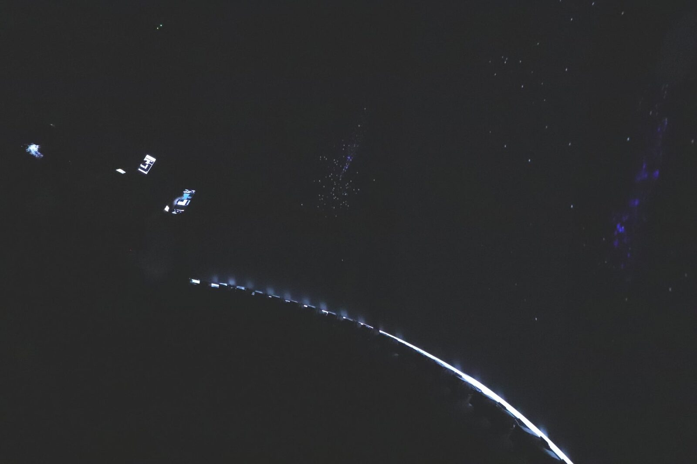
Figure 6-1. The AlloPortal

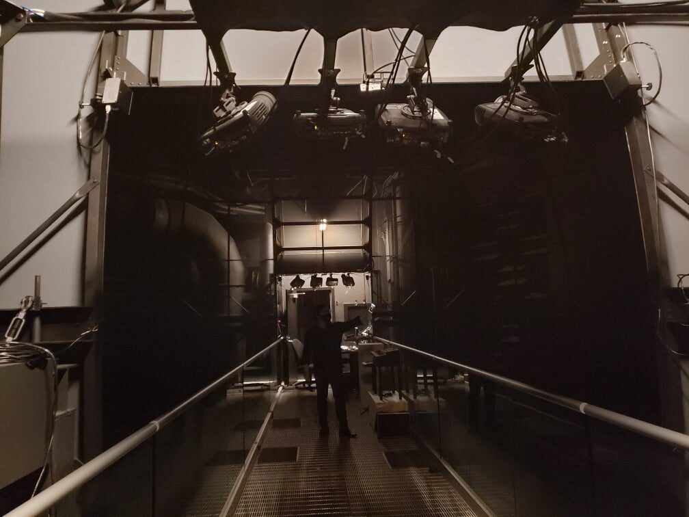
Figure 6-2. The AlloSphere
Entangled effectively delivers multimodal and multi-user experiences when played in the AlloSphere2[30][31]. This environment is ideal since it allows seamless surround-view for thirty or more people simultaneously in a shared 3D virtual world using Omnistereo imaging with their physical presence in the virtual space. The player's physical presence is especially important compared with conventional VR experiences since the player can look at the surroundings including other players' gestures or facial expressions to communicate while playing and it also establishes the crossmodal correspondence between other player's gestures and the virtual world. Figure 6-2 shows a view of the AlloSphere from the entrance.
The fundamental platform of the instrument, AlloLib, allows its installation to be scaled from a laptop to a distributed system of any size with multiple displays. For example, the demonstration of the instrument for this study is made with two players in the AlloPortal that accommodates a large frontal stereo projection screen. Figure 6-1 shows the overview of the AlloPortal.
Likewise, the size of the performance is adjustable. This implies the experience can not only be compressed but also be scaled even larger than the AlloSphere if the facility allows. This allows the unlimited opportunity for group creation and further instrument designs.
Conclusions and Future Work
The design criteria and methodology of a multimodal instrument and its implementation are elaborated throughout the paper. It is argued that a unique experience can be obtained when different modalities are naturally intertwined and the relation is easily understood by the players and audience. Entangled has been demonstrated with different groups of participants including computer science students, media artists, and electronic musicians. For instance, after a brief explanation, the audience was extemporally invited to play Entangled with their smartphones. The participants and audience could efficiently understand how their gestures affected gravity in the VR space and related the sound from the system. This allowed the participants to play Entangled proactively and dynamically with their gestures. Still, a statistical user study is left for future work to present the quality of experience numerically.
The name of the instrument, Entangled, not only implies the entangled states of gravity with particles but also connotes that various modalities are jointly established maintaining the causality. From the outlook, the implementation is made on a single C++ platform AlloLib, which is suitable for building interactive audiovisual applications. As a developer and the first player of Entangled, I have been writing exemplary phrases3 with narrative to make a multimodal piece.
For future works, I am exploring more possibilities of multi-user experience and develop further sonic or visual elements for the next version of the instrument since the machine learning-based gesture recognition allows more complicated commands to be involved. Additionally, I am developing the instrument with another law of physics. The project is expected to be the medium of a scientific and artistic narrative that allows the general audience to build insight and the scientists to be inspired by the core concept of modern physics interacting with a multimodal experience.
Acknowledgments
This material is based upon work supported by the National Science Foundation under Grant No. 2004693. I acknowledge the support of the AlloSphere Research Group, especially Prof. JoAnn Kuchera-Morin.
Footnotes
Citations
Magnusson, Thor. 2009. “Of Epistemic Tools: musical instruments as cognitive extensions.” In Organised Sound 14 (2): 168-176.
↩Emerson, Gina, and Hauke Egermann. 2017. “Mapping, Causality and the Perception of Instrumentality: Theoretical and Empirical Approaches to the Audience’s Experience of Digital Musical Instruments.” Musical Instruments in the 21st Century. Springer.
↩Tsiros, Augoustinos. 2017. “The Parallels between the Study of Crossmodal Correspondence and the Design of Cross-Sensory Mappings.” In Proceedings of the Conference on Electronic Visualisation and the Arts. BCS Learning & Development Ltd., 175–182.
↩Sulema, Yevgeniya. 2016. “Mulsemedia vs. Multimedia: State of the art and future trends,” International Conference on Systems, Signals and Image Processing (IWSSIP). 1–5.
↩Covaci, Alexandra, Estêvão B. Saleme, Gebremariam Mesfin, Nadia Hussain, Elahe Kani-Zabihi, and Gheorghita Ghinea. 2019. “How Do We Experience Crossmodal Correspondent Mulsemedia Content?” IEEE Transactions on Multimedia 22 (5): 1249-1258.
↩Atherton, Jack, and Ge Wang. 2020. “Curating Perspectives: Incorporating Virtual Reality into Laptop Orchestra Performance.” In Proceedings of the International Conference on New Interfaces for Musical Expression (NIME ’20), 154–159.
↩Çamcı, Anıl, Matias Vilaplana, and Ruth Wang. 2020. “Exploring the Affordances of VR for Musical Interaction Design with VIMEs.” In Proceedings of the International Conference on New Interfaces for Musical Expression (NIME ’20), 121–126.
↩Egozy, Eran, and Eun Y. Lee. 2018. “*12*: Mobile phone-based audience participation in a chamber music performance.” In Proceedings of the International Conference on New Interfaces for Musical Expression (NIME ’18), 7–12.
↩Lee, Sang Won, and Jason Freeman. 2013. “echobo : A Mobile Music Instrument Designed for Audience To Play.” In Proceedings of the International Conference on New Interfaces for Musical Expression (NIME ’13), 450–455.
↩Xambó, Anna, and Gerard Roma. 2020. “Performing Audiences: Composition Strategies for Network Music using Mobile Phones”. In Proceedings of the International Conference on New Interfaces for Musical Expression (NIME ’20), 55–60.
↩Essl, Georg, Ge Wang, and Michael Rohs. 2008. “Developments and Challenges turning Mobile Phones into Generic Music Performance Platforms.” International Mobile Music Workshop, Vienna, Austria.
↩Brizolara, Tiago, Sylvie Gibet, and Caroline Larboulette. 2020. “Elemental: a Gesturally Controlled System to Perform Meteorological Sounds.” In Proceedings of the International Conference on New Interfaces for Musical Expression (NIME ’20), 470–476.
↩Leonard, James, and Andrea Giomi. 2020. “Towards an Interactive Model-Based Sonification of Hand Gesture for Dance Performance.” In Proceedings of the International Conference on New Interfaces for Musical Expression (NIME ’20), 369–374.
↩Nishida, Kiyu, Akishige Yuguchi, Kazuhiro Jo, Paul Modler, and Markus Noisternig. 2019. “Border: A Live Performance Based on Web AR and a Gesture-Controlled Virtual Instrument.” In Proceedings of the International Conference on New Interfaces for Musical Expression (NIME ’19), 43–46.
↩Spence, Charles. 2011. “Crossmodal correspondences: A tutorial review.” Attention Perception Psychophysics.
↩Large, Edward. 2008. “Resonating to musical rhythm: theory and experiment.” The psychology of time, 189-232
↩Roads, Curtis. 2001. “Microsound,” The MIT Press.
↩Jordà, Sergi. 2008. “On stage: the reactable and other musical tangibles go real.” International Journal of Arts and Technology
↩Françoise, Jules, Norbert Schnell, and Frédéric Bevilacqua. 2016. “A multimodal probabilistic model for gesture based control of sound synthesis.” ACM Multimedia.
↩Traube, Caroline, Philippe Depalle, and Marcelo Wanderley. 2003. “Indirect Acquisition of Instrumental Gesture Based on Signal, Physical and Perceptual Information.“ New Interfaces for Musical Expression, NIME-03.
↩Lee, Myungin. 2018. “Deep neural network based music source conducting system.” Proceedings of the International Computer Music Conference, ICMC.
↩Wang, Ge. 2018. Artful Design: Technology in Search of the Sublime. Stanford University Press.
↩Roberts, Charlie, Graham Wakefield, and Mattew Wright. 2013. “The Web Browser As Synthesizer And Interface.” In Proceedings of the International Conference on New Interfaces for Musical Expression.
↩Simonyan, Karen, and Andrew Zisserman. 2014. “Very Deep Convolutional Networks for Large-scale Image Recognition.” arXiv:1409.1556.
↩Hershey, Shawn, Sourish Chaudhuri, Daniel P. W. Ellis, Jort F. Gemmeke, Aren Jansen, R. Channing Moore, Manoj Plakal, Devin Platt, Rif A. Saurous, Bryan Seybold, Malcolm Slaney, Ron J. Weiss, and Kevin Wilson. 2017. "CNN architectures for large-scale audio classification." IEEE International Conference on Acoustics, Speech and Signal Processing (ICASSP)
↩Yalta, Nelson, Shinji Watanabe, Takaaki Hori, Kazuhiro Nakadai, and Tetsuya Ogata. 2019. “CNN-based Multichannel End-to-End Speech Recognition for Everyday Home Environments.” 27th European Signal Processing Conference (EUSIPCO).
↩Tong, Chao, Jun Li, and Fumin Zhu. 2017. “A convolutional neural network based method for event classification in event-driven multi-sensor network.” Computers & Electrical Engineering, 60: 90-99.
↩Opałka, Sławomir,Bartłomiej Stasiak, Dominik Szajerman, and Adam Wojciechowski. 2018. "Multi-Channel Convolutional Neural Networks Architecture Feeding for Effective EEG Mental Tasks Classification" Sensors 18, no. 10: 3451.
↩Hong, Feng. Shujuan You, Meiyu Wei, Yongtuo Zhang, and Zhongwen Guo. 2016. “MGRA: Motion Gesture Recognition via Accelerometer.” Sensors. 16. 530:1-25.
↩Kuchera-Morin, JoAnn, Matthew Wright, Graham Wakefield, Charles Roberts, Dennis Adderton, Behzad Sajadi, Tobias Höllerer, and Aditi Majumder. 2014. “Immersive full-surround multi-user system design.” Computers & Graphics. 40. 10–21.
↩Kuchera-Morin, JoAnn, Lance Putnam, Luca Peliti, Dennis Adderton, Andrés Cabrera, Konhyong Kim, Gustavo A Rincon, Joseph Tilbian, Hannah Wolfe, Tim Wood, and Keehong Youn. 2017. “PROBABLY/POSSIBLY?: An Immersive Interactive Visual/Sonic Quantum Composition and Synthesizer.” MM '17: Proceedings of the 25th ACM international conference on Multimedia.
↩